C# / .NET 9 — TCP sockets, threads, delegates and events
LAUNAY-SCHAPMAN Alexis & AUGAY Eliott — EFREI I2, Interface Development and Design
Numbering follows the project statement (docs/Project.pdf). All listed functions are implemented.
| # | Function | Implementation |
|---|---|---|
| 1 | Start and stop the server | Accept loop in its own thread; typing stop in the server console warns every client, stops the listener and closes all sockets. |
| 2 | Accept multiple client connections via TCP sockets | TcpListener on 127.0.0.1:5050, one background thread per client (ClientHandler). |
| 3 | Authenticate users (username-based login) | First line sent by the client is the username; it must be unique (case-insensitive) and valid, otherwise the server asks again. |
| 4 | Maintain a list of connected clients | Dictionary<string, ClientHandler> in Server, protected by a lock on a private object. |
| 5 | Receive messages from clients | Text protocol, one line = one message, read by the client's thread; commands are parsed on the server. |
| 6 | Broadcast messages using delegates | MessageEventHandler delegate + MessageBroadcast event; every ClientHandler subscribes. Messages are time-stamped by the server: [HH:mm] user : text. |
| 7 | Send private messages to specific users | /msg user text: written directly to the recipient's writer, echoed to the sender; clear error if the user is unknown. |
| 8 | Log server activity | Logger subscribed to the server events ClientConnected, ClientDisconnected, MessageReceived, ErrorOccurred; writes to the console and server.log. |
| # | Function | Implementation |
|---|---|---|
| 1 | Connect to the server | TcpClient to 127.0.0.1:5050; clear message if the server is not running. |
| 2 | Send username | The first line typed is sent as the username; the server's answer is displayed. |
| 3 | Send public messages | Keyboard thread (main thread) writes each line to the socket. |
| 4 | Receive and display broadcast messages | Separate network-reading thread prints every line received. |
| 5 | Send and receive private messages | /msg user text; private messages are shown as (privé). |
| Command | Effect |
|---|---|
/name new | Change username (uniqueness checked under the lock), announced to everyone. |
/quit | Clean disconnection; departure announced to everyone. |
/users | List connected users. |
/msg user text | Private message. |
/help | List of commands (extension). |
/joke | Fetches a programming joke from api.chucknorris.io (category dev) and broadcasts it (extension). |
/help, /joke.server.log.Note: user-facing messages of the application are in French (e.g. « a rejoint le chat » = “joined the chat”, « privé » = “private”).
Two console projects in one solution (ChatApp.sln):
Program.cs (listener, accept thread, console stop), Server (shared object: client dictionary, broadcast event, activity events), ClientHandler (one per client, runs in its own thread, parses commands), Logger (subscriber to activity events), JokeService (HTTP call).Program.cs with two threads — main thread reads the keyboard and writes to the socket, a background thread reads the socket and prints.The protocol is plain text over TCP, one line per message (UTF-8). The client is “dumb”: it only sends what is typed and displays what is received; all parsing happens on the server. A single Server instance is shared by all ClientHandler threads; shared state (the dictionary, each writer, the log file) is protected by locks.
flowchart LR
subgraph Clients
C1[ChatClient alice]
C2[ChatClient bob]
end
subgraph ChatServer
P[Program accept thread]
H1[ClientHandler thread alice]
H2[ClientHandler thread bob]
S[Server - Dictionary + events]
L[Logger]
end
C1 -- TCP line --> H1
C2 -- TCP line --> H2
P -- new thread --> H1
P -- new thread --> H2
H1 --> S
H2 --> S
S -- MessageBroadcast event --> H1
S -- MessageBroadcast event --> H2
S -- activity events --> L
The accept loop runs in a dedicated background thread so that the main thread stays free to read the server console. When the operator types stop, the server sets IsStopping, stops the listener (which unblocks AcceptTcpClient with a SocketException), copies the list of handlers under the lock, then warns and closes each client outside the lock. Each handler's finally then unregisters itself; the main thread waits until the list is empty before exiting.
sequenceDiagram
actor Op as Operator
participant S as Server
participant H as ClientHandler
participant C as Client
participant L as Logger
Op->>S: stop (server console)
S->>S: IsStopping = true, listener.Stop()
S->>S: copy handlers under _clientsLock
S->>H: Send("Le serveur s'arrête")
H->>C: line
S->>H: Close()
H-->>H: ReadLine fails, finally block
H->>S: NotifyDisconnected / Unregister
S->>L: ClientDisconnected event
C-->>C: read thread sees end of stream, "Connexion perdue", exit
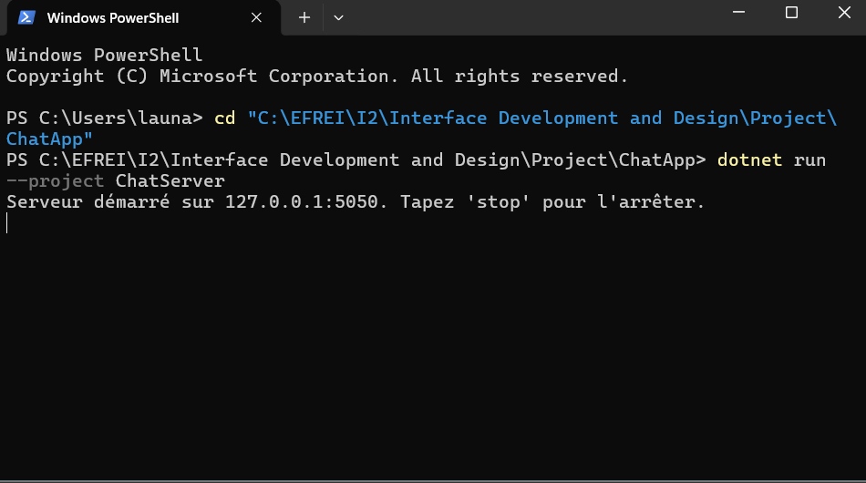
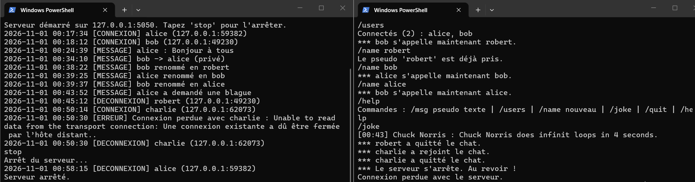
stop: clients are warned and disconnectedFor each accepted TcpClient the accept thread creates a ClientHandler and starts it in a new background thread. The handler asks for a username; Server.TryRegister checks uniqueness and inserts into the dictionary in a single locked operation, so two clients cannot obtain the same name. If the name is taken or invalid, the server asks again. Only after a successful login does the handler subscribe to the broadcast event and announce the arrival.
sequenceDiagram
participant C as Client
participant H as ClientHandler
participant S as Server
participant L as Logger
C->>H: TCP connect (accept thread starts handler thread)
H->>C: "Entrez votre pseudo"
C->>H: Alice
H->>S: TryRegister("Alice")
S-->>H: false (name taken)
H->>C: "déjà pris. Réessayez"
C->>H: bob
H->>S: TryRegister("bob")
S-->>H: true
H->>S: MessageBroadcast += OnBroadcast
H->>S: NotifyConnected
S->>L: ClientConnected event
H->>S: Broadcast("bob a rejoint le chat")
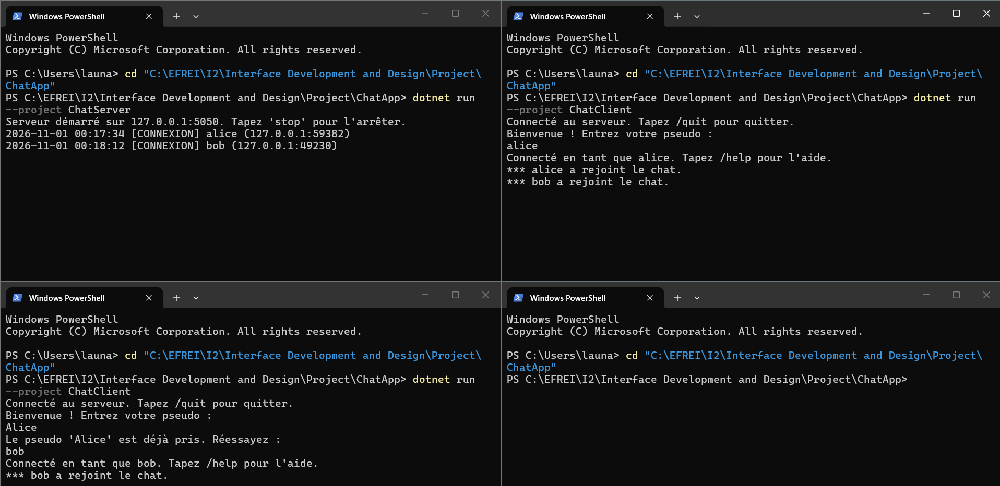
A line that does not start with / is a public message. The handler formats it with a server-side timestamp and calls Server.Broadcast, which raises the MessageBroadcast event. The event invokes the OnBroadcast method of every subscribed handler; each one writes the line to its own client under its own writer lock. The server never iterates over clients to send a message: the delegate invocation list does it, which keeps Server decoupled from ClientHandler.
sequenceDiagram
participant CA as Client alice
participant HA as ClientHandler alice
participant S as Server
participant HB as ClientHandler bob
participant CB as Client bob
participant L as Logger
CA->>HA: Bonjour à tous
HA->>S: NotifyMessage
S->>L: MessageReceived event
HA->>S: Broadcast("[21:05] alice : Bonjour à tous")
S->>HA: MessageBroadcast event (OnBroadcast)
S->>HB: MessageBroadcast event (OnBroadcast)
HA->>CA: line
HB->>CB: line
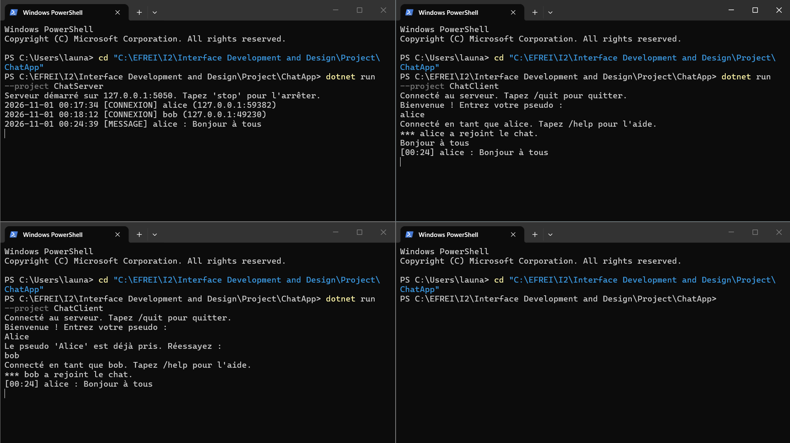
/msg user text is parsed by the sender's handler. Server.Find looks the recipient up in the dictionary under the lock; the handler then writes directly into the recipient's writer (target.Send, protected by the recipient's writer lock) and echoes the message to the sender. The broadcast event is not used, so nobody else receives it. An unknown user produces a clear error.
sequenceDiagram
participant CB as Client bob
participant HB as ClientHandler bob
participant S as Server
participant HA as ClientHandler alice
participant CA as Client alice
CB->>HB: /msg alice salut en privé
HB->>S: Find("alice")
S-->>HB: handler of alice
HB->>HA: Send("(privé) bob : salut en privé")
HA->>CA: line
HB->>CB: echo "(privé à alice)"
CB->>HB: /msg zoe test
HB->>S: Find("zoe")
S-->>HB: null
HB->>CB: "Erreur : utilisateur 'zoe' inconnu"
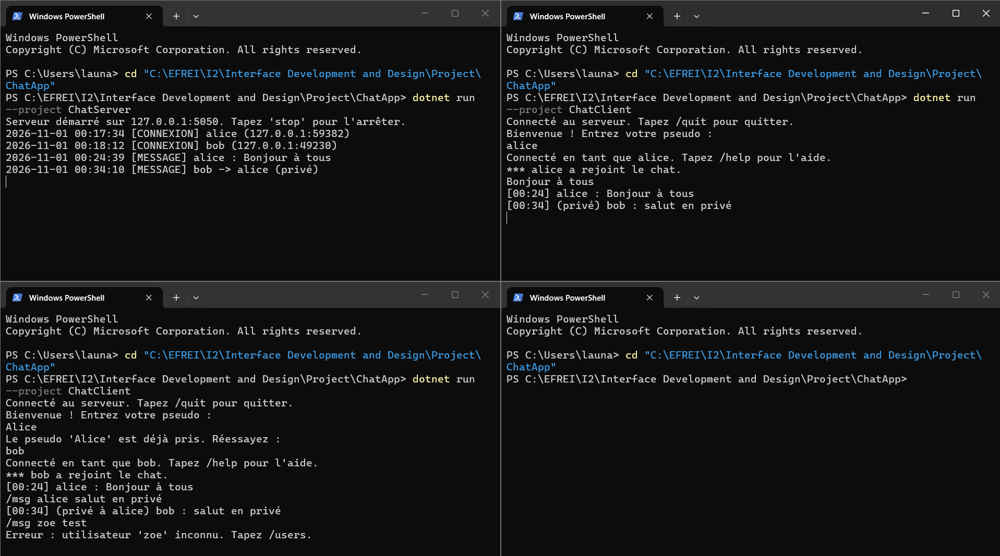
All commands are parsed on the server in ClientHandler.HandleCommand. /users returns a sorted copy of the dictionary keys taken under the lock. /name calls Server.TryRename, which checks uniqueness and replaces the key inside the same lock (no window where two users could take the same name), then announces the change to everyone. /quit answers “Au revoir”, leaves the read loop and lets the finally block do the cleanup. /help lists the commands.
sequenceDiagram
participant C as Client bob
participant H as ClientHandler bob
participant S as Server
C->>H: /users
H->>S: GetUserNames() under lock
H->>C: "Connectés (2) : alice, bob"
C->>H: /name robert
H->>S: TryRename("bob", "robert") under lock
S-->>H: true
H->>S: Broadcast("bob s'appelle maintenant robert")
C->>H: /quit
H->>C: "Au revoir !"
H-->>H: leave loop, finally (unsubscribe, unregister, close)
H->>S: Broadcast("robert a quitté le chat")
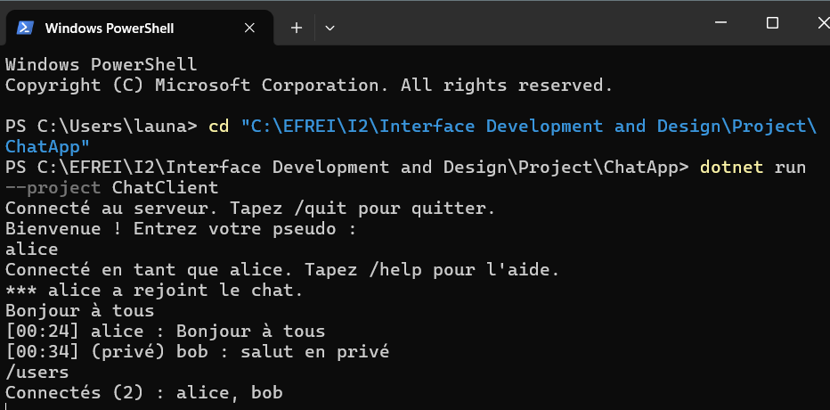
/users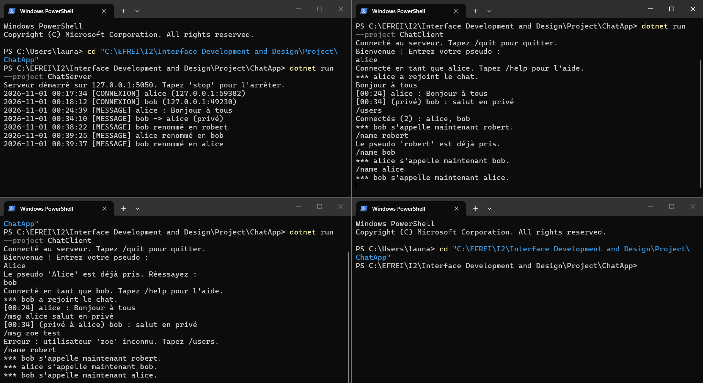
/name, including a refused duplicate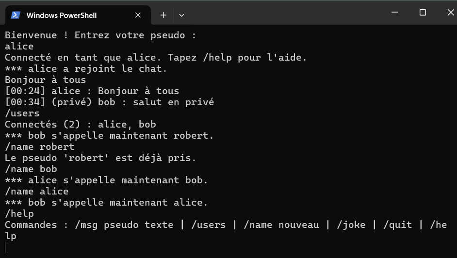
/help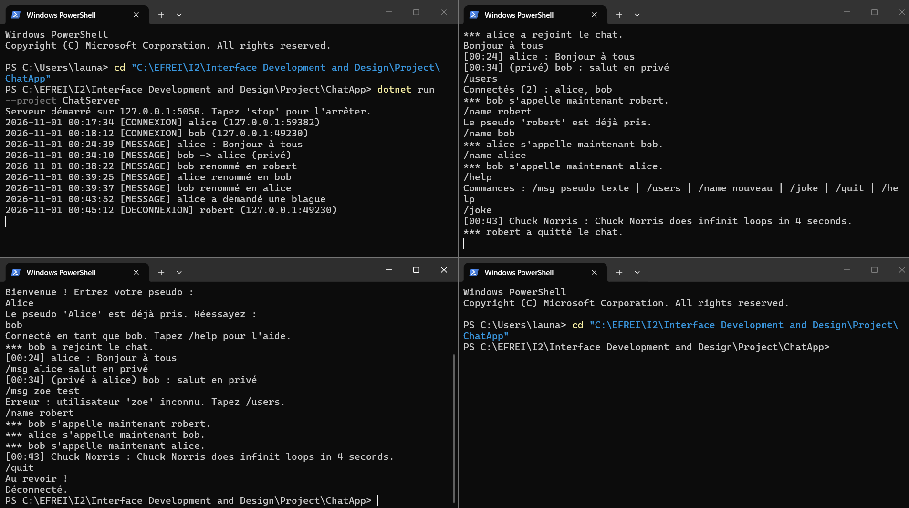
/quit and departure announcementThe Logger uses exactly the same pattern as the broadcast: Server exposes four events of type LogEventHandler (ClientConnected, ClientDisconnected, MessageReceived, ErrorOccurred) raised through protected virtual On… methods. Logger.Attach subscribes to them. Every handler formats a time-stamped line with a category and writes it to the console and to server.log inside a lock, because events are raised concurrently by several client threads. The server code never writes errors with Console.WriteLine directly.
sequenceDiagram
participant H as ClientHandler
participant S as Server
participant L as Logger
H->>S: ReportError("Connexion perdue avec bob")
S->>S: OnErrorOccurred(e)
S->>L: ErrorOccurred event (OnErrorOccurred)
L->>L: lock(_logLock)
L->>L: Console.WriteLine + File.AppendAllText(server.log)
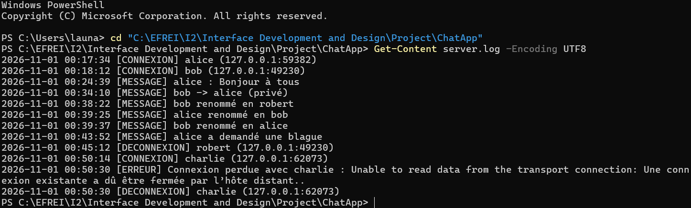
server.logOn the server, ClientHandler.Run is wrapped in try/catch/finally: an abrupt disconnection raises an IOException (logged as an error), and the finally block always unsubscribes from the event, announces the departure, removes the user from the dictionary and closes the socket. A client that never finished the login is simply closed. On the client, a missing server is caught at connection time (SocketException). When the server closes the connection, the network thread detects the end of stream (or an IOException), prints “Connexion perdue avec le serveur.” and ends the process with Environment.Exit, because the main thread is blocked in Console.ReadLine.
sequenceDiagram
participant C as Client charlie
participant H as ClientHandler charlie
participant S as Server
participant L as Logger
C--xH: window closed (connection reset)
H-->>H: ReadLine throws IOException or returns null
H->>S: ReportError (if IOException)
S->>L: ErrorOccurred event
H->>S: MessageBroadcast -= OnBroadcast
H->>S: NotifyDisconnected
S->>L: ClientDisconnected event
H->>S: Broadcast("charlie a quitté le chat")
H->>S: Unregister("charlie")
H->>H: Close()
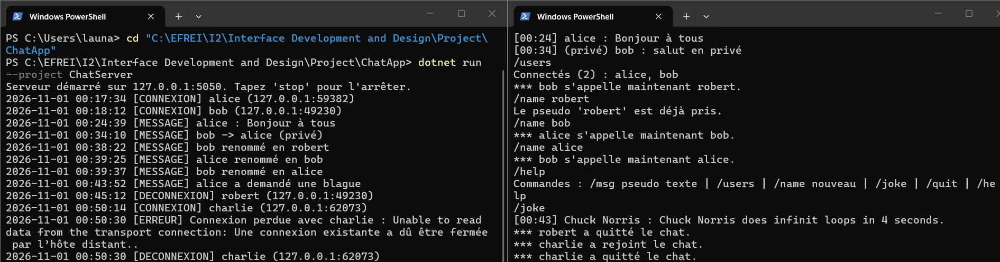
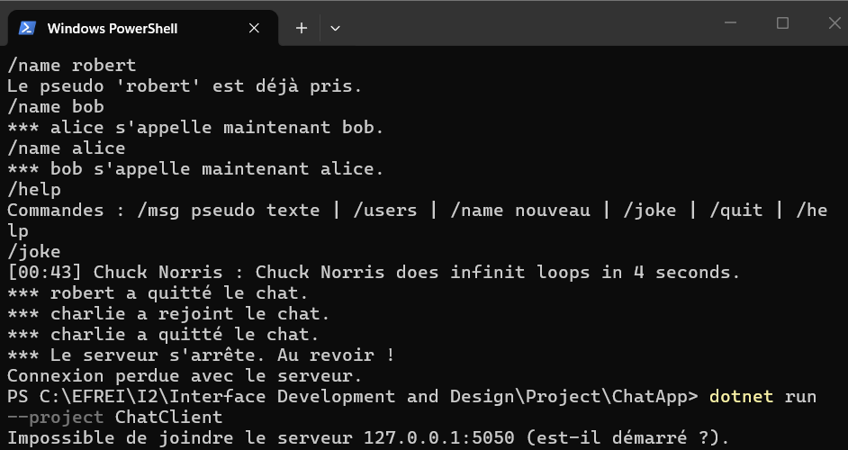
/joke calls JokeService.GetJoke, which uses a single static HttpClient shared by the whole application and a synchronous Send (consistent with the thread-based design: the call blocks only the requesting client's thread). The request targets /jokes/random?category=dev to avoid explicit jokes. The JSON field value is read with System.Text.Json and the joke is broadcast to everyone. Any network or parsing error is logged and the requester receives “Service de blagues indisponible.”
sequenceDiagram
participant C as Client
participant H as ClientHandler
participant J as JokeService
participant S as Server
participant L as Logger
C->>H: /joke
H->>J: GetJoke()
J->>J: HttpClient.Send GET api.chucknorris.io category dev
alt success
J-->>H: value
H->>S: Broadcast("[21:10] Chuck Norris : ...")
else error
J-->>H: exception
H->>S: ReportError
S->>L: ErrorOccurred event
H->>C: "Service de blagues indisponible."
end
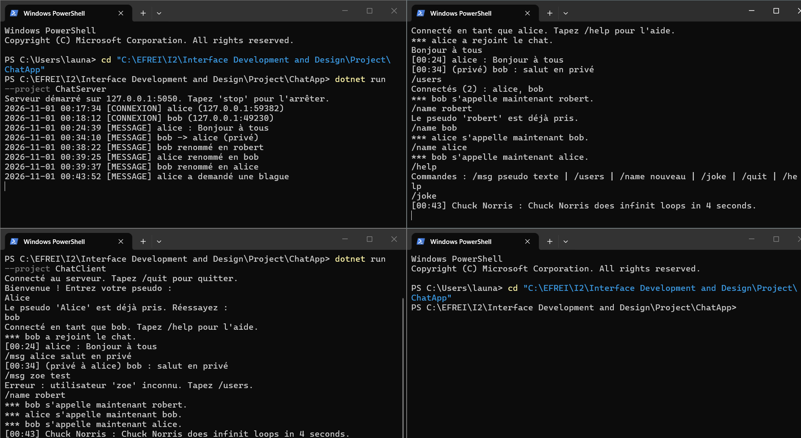
/joke broadcast to every clientThe delegate defines the signature of the subscribers; the event can only be raised from inside Server. ?.Invoke avoids a NullReferenceException when nobody is subscribed.
public delegate void MessageEventHandler(object sender, MessageEventArgs e);
public class MessageEventArgs : EventArgs
{
public string Text { get; }
public MessageEventArgs(string text) { Text = text; }
}
public class Server
{
public event MessageEventHandler? MessageBroadcast;
protected virtual void OnMessageBroadcast(MessageEventArgs e)
{
MessageBroadcast?.Invoke(this, e);
}
public void Broadcast(string text)
{
MessageEventArgs args = new MessageEventArgs(text);
OnMessageBroadcast(args);
}
}
Subscriber side (ClientHandler.cs): subscription after login, unsubscription in finally, and a writer lock because several threads may raise the event at the same time.
_server.MessageBroadcast += OnBroadcast; // after a successful login
...
_server.MessageBroadcast -= OnBroadcast; // in finally
private void OnBroadcast(object sender, MessageEventArgs e)
{
Send(e.Text);
}
// Direct write to this client, protected by the writer's lock
public void Send(string text)
{
lock (_writeLock)
{
try { _writer?.WriteLine(text); }
catch (IOException ex)
{
if (!_server.IsStopping)
_server.ReportError($"Envoi impossible à {Name ?? _endPoint} : {ex.Message}");
}
catch (ObjectDisposedException) { }
}
}
// Accept loop in its own thread: the console stays free for 'stop'
Thread acceptThread = new Thread(() =>
{
try
{
while (true)
{
TcpClient client = listener.AcceptTcpClient();
ClientHandler handler = new ClientHandler(client, server);
Thread thread = new Thread(handler.Run);
thread.IsBackground = true; // does not keep the process alive
thread.Start();
}
}
catch (SocketException ex)
{
// listener.Stop() unblocks AcceptTcpClient with an exception
if (!server.IsStopping)
server.ReportError($"Boucle Accept interrompue : {ex.Message}");
}
});
The dictionary is only accessed inside lock (_clientsLock), a private object nobody else can lock. Check-and-insert and check-and-rename are atomic.
private readonly Dictionary<string, ClientHandler> _clients =
new Dictionary<string, ClientHandler>(StringComparer.OrdinalIgnoreCase);
private readonly object _clientsLock = new object();
public bool TryRegister(string name, ClientHandler handler)
{
lock (_clientsLock)
{
if (_clients.ContainsKey(name)) return false;
_clients.Add(name, handler);
return true;
}
}
public bool TryRename(string oldName, string newName, ClientHandler handler)
{
lock (_clientsLock)
{
bool sameUser = string.Equals(oldName, newName, StringComparison.OrdinalIgnoreCase);
if (!sameUser && _clients.ContainsKey(newName)) return false;
_clients.Remove(oldName);
_clients.Add(newName, handler);
return true;
}
}
public void Run()
{
try
{
...
if (!Login(reader)) return;
_server.MessageBroadcast += OnBroadcast;
_server.NotifyConnected($"{Name} ({_endPoint})");
_server.Broadcast($"*** {Name} a rejoint le chat.");
string? line;
while ((line = reader.ReadLine()) != null)
{
if (line.Trim().Length == 0) continue;
if (line.StartsWith('/'))
{
if (!HandleCommand(line)) break; // /quit
}
else
{
_server.NotifyMessage($"{Name} : {line}");
_server.Broadcast(Server.Format(Name!, line)); // [HH:mm] name : text
}
}
}
catch (IOException ex) { /* abrupt disconnection, logged */ }
catch (ObjectDisposedException) { }
finally
{
// Always executed, even after an abrupt disconnection
_server.MessageBroadcast -= OnBroadcast;
if (Name != null) // only if the login succeeded
{
_server.NotifyDisconnected($"{Name} ({_endPoint})");
_server.Broadcast($"*** {Name} a quitté le chat.");
_server.Unregister(Name);
}
Close();
}
}
private bool HandleCommand(string line)
{
string[] parts = line.Split(' ', 3, StringSplitOptions.RemoveEmptyEntries);
switch (parts[0].ToLowerInvariant())
{
case "/msg":
ClientHandler? target = _server.Find(parts[1]);
if (target == null || target.Name == null) { Send("Erreur : utilisateur ... inconnu"); break; }
target.Send($"[{DateTime.Now:HH:mm}] (privé) {Name} : {parts[2]}"); // recipient's writer
Send($"[{DateTime.Now:HH:mm}] (privé à {target.Name}) {Name} : {parts[2]}"); // echo
break;
case "/users": ... // _server.GetUserNames()
case "/name": ... // _server.TryRename(...) then Broadcast
case "/joke": ... // JokeService.GetJoke() then Broadcast
case "/quit":
Send("Au revoir !");
return false; // leaves the loop, finally does the cleanup
case "/help": ...
}
return true;
}
public delegate void LogEventHandler(object sender, LogEventArgs e);
// In Server: same pattern as MessageBroadcast
public event LogEventHandler? ClientConnected;
public event LogEventHandler? ClientDisconnected;
public event LogEventHandler? MessageReceived;
public event LogEventHandler? ErrorOccurred;
protected virtual void OnErrorOccurred(LogEventArgs e) { ErrorOccurred?.Invoke(this, e); }
public void ReportError(string text) { OnErrorOccurred(new LogEventArgs(text)); }
// In Logger
public void Attach(Server server)
{
server.ClientConnected += OnClientConnected;
server.ClientDisconnected += OnClientDisconnected;
server.MessageReceived += OnMessageReceived;
server.ErrorOccurred += OnErrorOccurred;
}
private void Write(string category, string text)
{
string line = $"{DateTime.Now:yyyy-MM-dd HH:mm:ss} [{category}] {text}";
lock (_logLock) // several client threads log at the same time
{
Console.WriteLine(line);
File.AppendAllText(_path, line + Environment.NewLine);
}
}
The handlers are copied under the lock, then warned and closed outside the lock: closing a socket makes the handler's finally call Unregister, which takes the same lock — doing it inside would modify the collection during enumeration.
// Program.cs
Console.WriteLine("Arrêt du serveur...");
server.IsStopping = true;
listener.Stop(); // no more new connections
server.StopAll("*** Le serveur s'arrête. Au revoir !");
acceptThread.Join(2000);
// wait (max 2 s) until every handler has finished its finally block
while (server.GetUserNames().Count > 0 && DateTime.Now < limit)
Thread.Sleep(50);
// Server.cs
public void StopAll(string message)
{
IsStopping = true;
List<ClientHandler> handlers;
lock (_clientsLock)
{
handlers = _clients.Values.ToList();
}
foreach (ClientHandler handler in handlers)
{
handler.Send(message);
handler.Close();
}
}
try { client = new TcpClient("127.0.0.1", 5050); }
catch (SocketException)
{
Console.WriteLine("Impossible de joindre le serveur 127.0.0.1:5050 (est-il démarré ?).");
return 1;
}
// Network thread: prints everything the server sends
Thread readThread = new Thread(() =>
{
try
{
string? l;
while ((l = reader.ReadLine()) != null)
Console.WriteLine(l);
}
catch (IOException) { }
catch (ObjectDisposedException) { }
if (Volatile.Read(ref quitting)) return;
// Server side cut: main thread is blocked on Console.ReadLine, so exit the process
Console.WriteLine("Connexion perdue avec le serveur.");
Environment.Exit(1);
});
readThread.IsBackground = true;
readThread.Start();
// Main thread: keyboard -> server (writer.WriteLine in try/catch IOException)